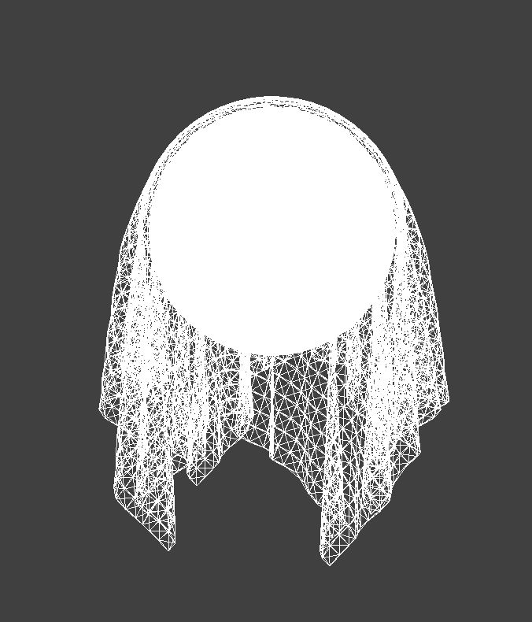
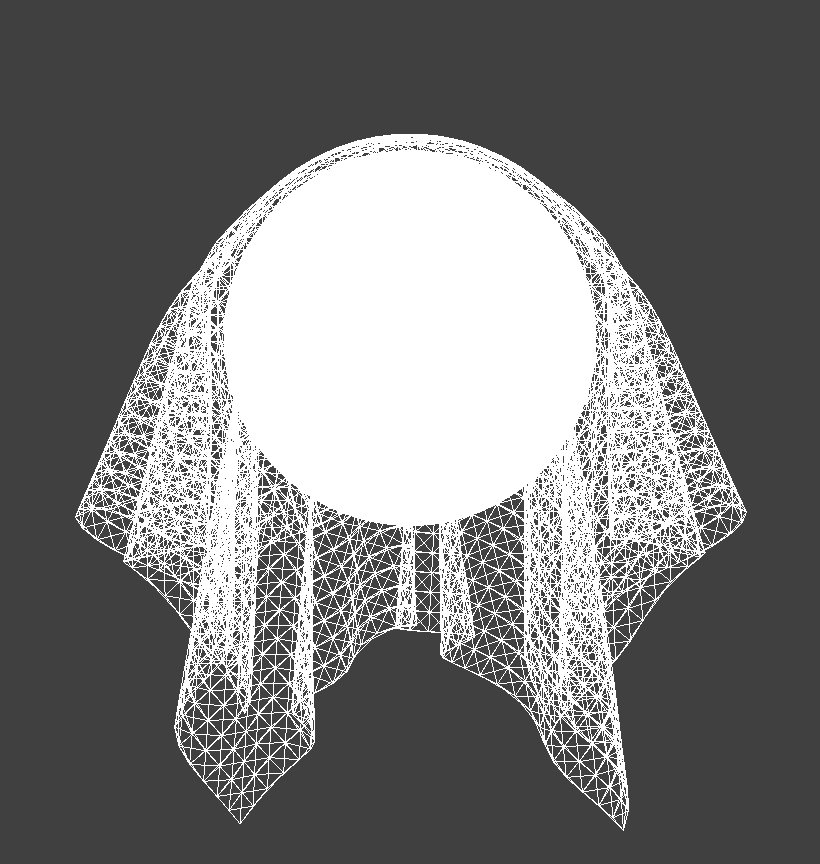
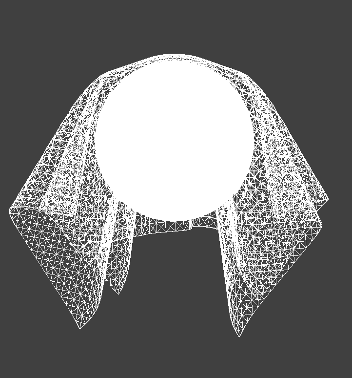
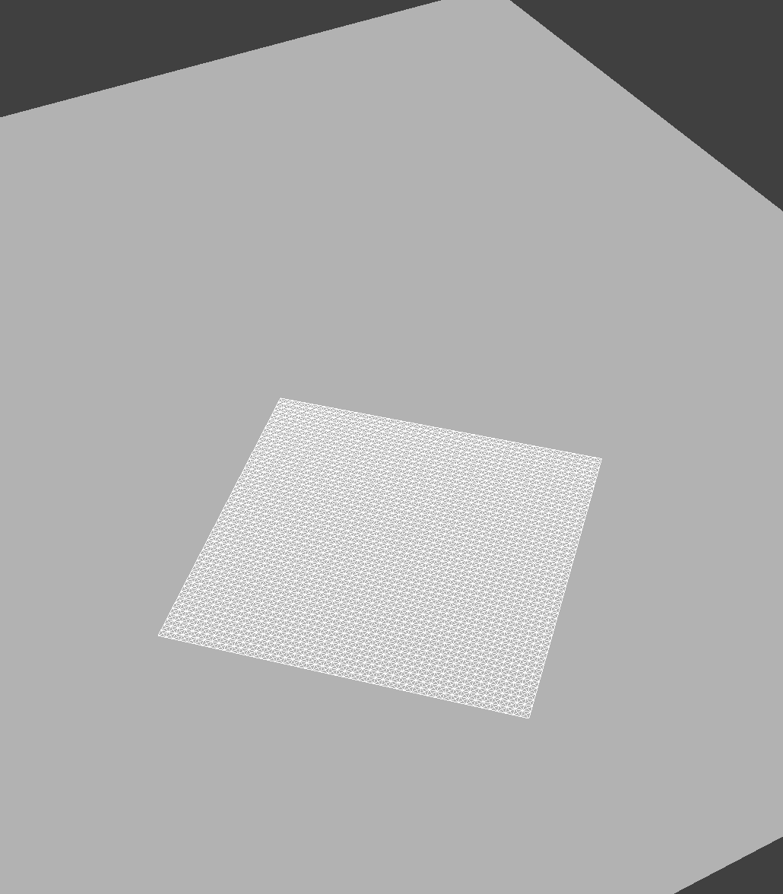

Describe your implementation of handling collisions with spheres and planes.
Sphere collisions were handled by first checking if the point mass's new position lies inside the sphere. This is done by computing the distance between the point mass and the sphere's center and checking if it is less than or equal to the sphere's radius. If it is, the point mass is projected outward to the sphere's surface along the direction from the sphere's center to the point mass, defining the tangent point.
A correction vector from the previous position to the tangent point is computed and scaled down by
1 - friction coefficient to move the point mass just outside the sphere while accounting for energy
loss due to friction.
Plane collisions were handled by checking whether a point mass crosses from one side of the plane to the other by checking the sign of the dot product with the plane normal. If a crossing occurs, the displacement from the previous position to the current position is used to compute the intersection point with the plane along its path, referred to as the tangent point.
A small offset is applied in the direction of the side the point mass started from so it will rest on top of the
flat surface. A correction vector from the previous position to the new point is scaled by
1 - friction coefficient and applied to ensure the point mass remains just above the plane while
accounting for energy loss due to friction.
Show us screenshots of your shaded cloth from scene/sphere.json in its final resting state on the sphere using the default ks = 5000 as well as with ks = 500 and ks = 50000. Describe the differences in the results.



Lower spring constants represent springs with low stiffness, which results in a cloth that has a softer and
more elastic appearance. In the simulation with ks = 500, the cloth drapes over the sphere with
more stretch and moves more under the forces of gravity.
Higher spring constants represent springs with greater stiffness, which results in a cloth that does not bend
as easily. In the simulation with ks = 50000, the cloth drapes over the sphere in a more rigid way
where it does not mold to the shape as easily and has larger folds.
Show us a screenshot of your shaded cloth lying peacefully at rest on the plane.
